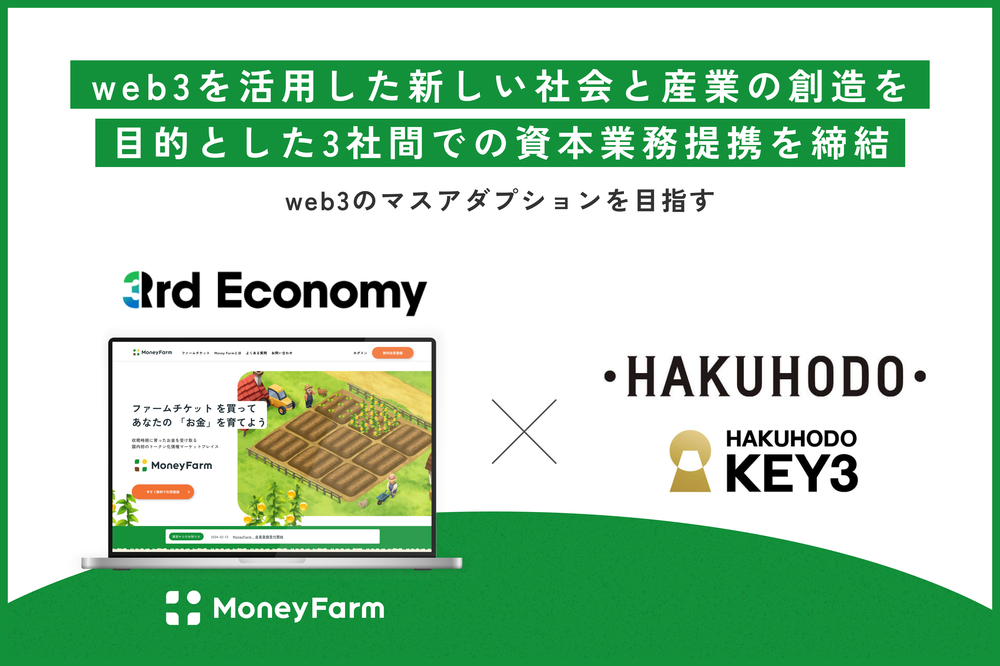
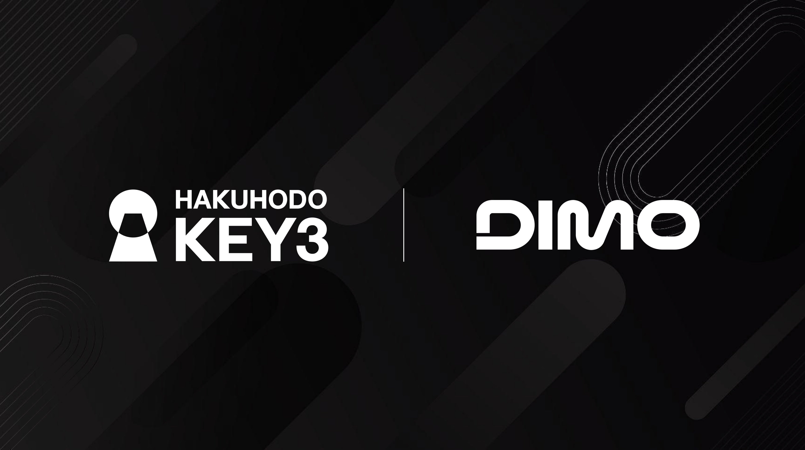
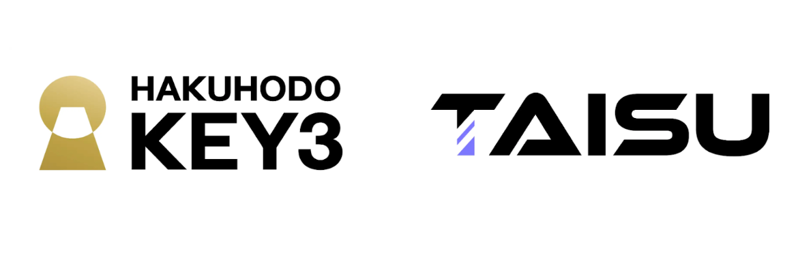
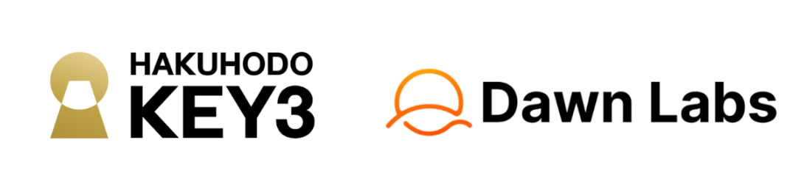

Our Strengths
01
博報堂DYホールディングス流の生活者発想を、機関投資家・個人投資家のインサイト分析に応用。誰に、どんなトーンで届ければ心が動くのか、行動を起こすのかを解像度高く設計します。
02
金商法・不動産特定共同事業法・資金決済法・貸金業法。複雑な規制要件を踏まえたうえで、「言える範囲」で最大限"伝わる"クリエイティブを設計します。
03
調査・戦略・クリエイティブ・メディア・PR——博報堂DYホールディングス全体のケイパビリティを、金融・ファンド領域の文脈に最適化して届けます。
About Us
博報堂キースリーは、博報堂DYホールディングスの専門子会社として、金融機関・資産運用会社・ファンド事業者・ブロックチェーン関連事業者の事業成長を統合的なコミュニケーションで支援します。
事業・ブランドのビジョン策定から、マーケティング戦略立案、生活者調査、メッセージ開発、クリティブ制作、デジタルマーケティングまで。金融業界の特性を深く理解したチームが、一気通貫で対応します。
機関投資家・個人投資家・採用候補者・メディア——金融機関が向き合うステークホルダーは多様です。それぞれに対して適切なメッセージを、適切なチャネルで届ける。それが現代の金融マーケティングの核心です。
私たちは博報堂DYホールディングスが持つ調査力・クリエイティブ力・メディアネットワークを活用しながら、金融業界固有の複雑さの中で最大限の訴求力を引き出します。
Hakuhodo Group Network
博報堂キースリーは博報堂DYホールディングスの一員として、ホールディングス全体の調査力・クリエイティブ力・メディアネットワークを活用できる立場にあります。金融の専門知識とホールディングスの総合力の掛け算が、私たちの最大の強みです。
専門子会社として意思決定が速く、クライアントの変化に機動的に対応できる柔軟性も持ち合わせています。
生活者研究・投資家調査・市場分析に、ホールディングスの定量・定性調査ネットワークを活用
必要に応じてホールディングス内の制作・デザイン・映像リソースとシームレスに連携
海外クライアントの日本参入、日本企業の海外展開を言語・文化両面で支援
大手代理店の総合力と専門子会社の意思決定スピードを両立。変化に素早く対応
Who We Serve
複雑なステークホルダー構造を持つAM会社のブランド戦略・IR・マーケティングを統合的に支援。機関投資家から個人投資家まで幅広く対応します。
不動産クラウドファンディング、私募REIT、J-REITの個人投資家獲得マーケティング。コンテンツ制作から広告運用まで一気通貫で提供します。
暗号資産取引所、STO発行体、ステーブルコイン事業者のブランディングとマーケティング。新しい金融の言語を、伝わる言葉に変えます。
WealthTech、InsurTech、決済事業者など新興金融サービスのユーザー獲得・ブランド認知向上。デジタルマーケティングと質の高いコンテンツを組み合わせます。
PEファーム・VCのLP向けIRコミュニケーション、ポートフォリオ企業の価値向上広告、エグジット時のストーリーテリングを支援します。
海外の資産運用会社・フィンテック企業の日本市場参入GTMを支援。日英中3ヶ国語対応と文化的適応が私たちの強みです。
STO発行体・デジタル社債発行企業の投資家コミュニケーション設計。新しい金融商品の価値を、投資家に分かりやすく伝えます。
NISA・iDeCoなどリテール金融商品の広告コミュニケーション、新商品ローンチ、企業ブランディング。大手から中堅金融機関まで対応します。
ステーブルコイン発行体・決済プラットフォーム事業者のブランディングと信頼構築。新しい決済の世界観を、わかりやすい言葉で投資家・利用者に伝えます。
Our Services
投資家・顧客それぞれのニーズを踏まえた企業・商品メッセージを精緻に設計。最大限の訴求力を引き出します。
日経・ブルームバーグ・ロイターなど金融専門メディアとのリレーションを活用。企業・人材・バリュープロポジションを的確に露出させます。
金融機関特有のレピュテーションリスクを事前に察知し、明確なファクトと規律あるコミュニケーションで対応。事前のシナリオ設計から当日対応まで。
経営幹部のパブリックプロファイルを構築。メディアトレーニング、講演サポート、SNS発信設計を一体的に提供し、個人ブランドで企業価値を高めます。
買収・合併・新ファンド組成・商品ローンチを、価値を際立たせ信頼を積み上げる計画によって対外発信。各ステークホルダーへの対応を統合的に管理します。
機関投資家向けの情報開示コンテンツ制作から個人投資家向けの説明資料まで。ファンドレイズを支援する投資家接点のコミュニケーション設計を行います。
金融機関がパフォーマンスだけでは差別化できない市場で、明確で一貫したブランドナラティブを構築。信頼と判断力で成り立つ業界において不可欠な基盤を作ります。
ブランドの世界観を体現するWebサイトを設計。機関投資家・個人投資家・採用候補者それぞれに対応したコンテンツ設計と、信頼感のあるビジュアル表現を実現します。
複雑な運用戦略・商品スキーム・リターン構造を、投資家が直感的に理解できるインフォグラフィックや図解で表現。難しいものを分かりやすく、しかも品よく伝えます。
企業ブランドを体現し、投資判断を後押しする動画コンテンツを制作。CEOメッセージ、商品説明、事例紹介など用途に応じた映像表現で信頼を醸成します。
ファンド説明資料、投資家向けプレゼンテーションなど、機関投資家グレードの資料を高品質に制作。金融特有の表現に熟知した上でデザインします。
新規設立から上場前のリブランディングまで、包括的なCI刷新プロジェクトに対応。ロゴ・カラー・タイポグラフィから始まる、一貫したブランド体験を設計します。
自社がオンライン上でどう見られるか、誰をターゲットにするか、どのようなブランドイメージを持たせるかを定義。金融業界に適したデジタル戦略の全体設計を行います。
機関投資家・仲介業者・富裕層それぞれに合わせたコンテンツを計画・制作・投稿。金融機関特有のコンプライアンスチェックを組み込んだ運用体制を構築します。
LinkedIn・Google・Meta等で精緻なオーディエンスセグメントにリーチ。ファンド投資家獲得、新規口座開設、サービス問い合わせ増加に向けた広告を最適化します。
ペイド・オウンド・アーンドの各チャンネルを統合した一貫性のあるキャンペーンを設計。新商品ローンチやブランドリポジショニングに効果的なIMCを実現します。
質の高いコンテンツで検索上位を獲得。ホワイトペーパー・レポート・コラムなどのソートリーダーシップコンテンツ制作を中心に、専門性と信頼性を積み上げます。
マーケティング投資のROIを可視化。チャネルごとの貢献度を分析し、予算配分の最適化を継続的に実施。データドリブンな改善サイクルを組織に定着させます。
事業フェーズ・競合環境を踏まえたマーケティング戦略を策定。「何を誰に・どのタイミングで・どのチャネルで」伝えるかを体系的に設計します。
博報堂DYホールディングスの調査力を活用し、投資家・見込み顧客のインサイトを深く掘り下げ。定量・定性の両面からメッセージ開発・商品企画に活用できる知見を提供します。
金融・ファンド市場の競合マップを精緻に分析し、自社の差別化ポジションを発見。訴求すべき独自価値（USP）を明確にして、ブランド戦略の土台を築きます。
海外資産運用会社・フィンテック企業の日本市場参入を総合的に支援。市場調査からコンテンツローカライズ、パートナー開拓、プレス発表まで一気通貫で対応。
デジタル社債・セキュリティトークン発行時の投資家向けコミュニケーション設計。新しい金融商品の「分かりやすさ」と「信頼性」の両立を実現します。
事業のビジョン・ミッション・バリューを言語化し、内外のコミュニケーションの基盤を作ります。金融機関のパーパス経営を、生きたコミュニケーションに落とし込みます。
Legal Expertise
金商法・不動産特定共同事業法・資金決済法・貸金業法。金融・ファンドの中核を支える法規制を踏まえたコミュニケーション設計が、機関投資家・個人投資家双方からの信頼を生む。広告表現・情報開示・販売チャネル設計まで、専門知識をもって伴走します。
01
Financial Instruments and Exchange ActSTO・ファンド・私募商品などの情報開示・販売規制・適合性原則を踏まえた発信。
02
Real Estate Specified Joint Enterprise Act不動産クラウドファンディングの広告表現・契約説明・投資家向け情報開示を設計。
03
Payment Services Actステーブルコイン・暗号資産発行体の規制要件に対応したコミュニケーション設計。
04
Money Lending Business Actソーシャルレンディング・ファンド型融資の広告・投資家コミュニケーションを支援。
Digital Assets
クリプト・デジタルアセット・STOの世界は、急速にグローバル金融エコシステムの変革的な力として台頭しています。しかし規制の進化とボラティリティが、機関投資家スペースを中心に懐疑論と不確実性に満ちた環境を生み出しています。
信頼・透明性・機関投資家グレードのリスク管理を前面に出したコミュニケーションが、この分野の成否を分けます。博報堂キースリーは、ブロックチェーン・デジタルアセット領域における深い知識と、金融コミュニケーションの専門性を掛け合わせます。
STO発行体の投資家向けコミュニケーション設計。革新性を伝えながら信頼を構築するメッセージングを開発します。
デジタル社債発行時の開示コミュニケーションと投資家向け説明資料の制作。新しい商品への理解促進を図ります。
ステーブルコイン事業者・決済プラットフォームのブランディングと信頼構築。新しい決済の世界観を分かりやすく伝えます。
不動産・インフラ・オルタナティブ資産のトークン化に伴う投資家コミュニケーションと市場教育コンテンツを設計します。
News & Releases

web3経済圏の社会実装に向け、3rd Economyへの出資と事業協業を開始しました。
Read more（新しいタブで開きます）
モビリティ×ブロックチェーンの先進事例、DIMOの日本展開を統合マーケティングで伴走します。
Read more（新しいタブで開きます）
グローバルweb3スタートアップと日本の事業会社をつなぐ共創プログラムを始動します。
Read more（新しいタブで開きます）
広告会社初のバリデータ運用を通じ、ブロックチェーンの実装知見を組織内に蓄積します。
Read more（新しいタブで開きます）Company
金融のマーケティングに関するお悩みをお気軽にご相談ください。
初回のご相談は無料です。